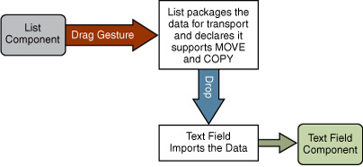
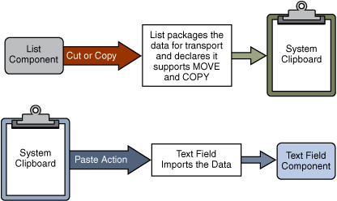

Si está escribiendo una aplicación querrá que soporte la habilidad de transferir información entre los componentes de su aplicación. Pero también querrá que su aplicación colabore bien con otras — esto incluye soportar la habilidad de transferir información entre su aplicación y otras aplicaciones de Java, y entre su aplicación y aplicaciones nativas. La habilidad de transferir datos toma dos formas:
JList y el soltado sobre un componente JTextField (las flechas muestran
el camino de los datos):

JList y el pegado sobre un componente JTextField:

Digamos que hay un usuario llamado Rollo, que está ejecutando una aplicación Java. Él quiere arrastrar algún texto desde una lista y depositarlo dentro de un campo de texto. (Note que el proceso es el mismo cuando se arrastra desde una aplicación nativa a una aplicación Java). En pocas palabras, el proceso de arrastrar y soltar funciona así:
COPY, MOVE, o LINK.
MOVE. Mantener la tecla Control pulsada mientras se arrastra solicita la
acción COPY, y mantener tanto la tecla Shift como la tecla Control solicita la acción
LINK.
Si bien esto podría parecer un proceso desalentador, Swing maneja la mayoría del trabajo por usted. El marco de trabajo está diseñado de forma que usted conecte los detalles específicos a su componente, y el resto " simplemente funciona".
Más sobre esto en la siguiente sección.
No recomendamos que usted cree su propio soporte de arrastrar y soltar usando las clases AWT. Esta implementación requeriría un soporte interno significativamente complejo para cada componente. Antes de la versión 1.4 cuando el sistema DnD fue reformulado, los desarrolladores ocasionalmente crearon su propio soporte Dnd, pero éste no funciona con componentes sofisticados, como árboles y tablas, que tienen problemas sutiles de selección y soltado.